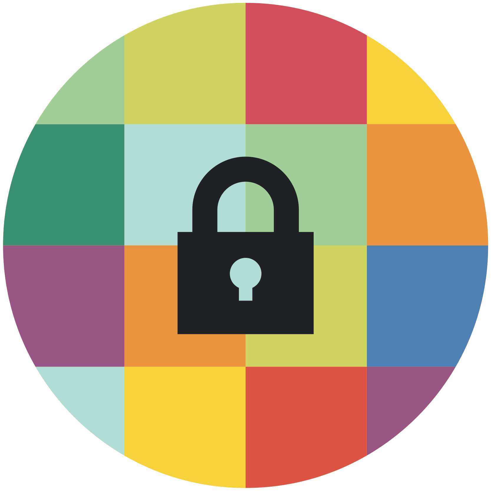

專家進階級 v.1
NGO 社運數位安全
- SAFETAG：Security Auditing Framework and Evaluation Template for Advocacy Groups (中文簡介)
- Organisational Security by The Engine Room
- Holistic Security by Tactical Technology Collective
專業支援社群、研究機構、政府官方資源
- Citizen Lab University of Toronto
- Security Without Border
- Digital Security Exchange
- LevelUp :Resources for the global digital safety training community
- US Government NIST CyberSecurity Framework：美國商業部轄下的「國家技術標準局」於2014發佈給企業界的數位安全參考框架。因為是從國家政策為主導的框架文件，也蠻適合 NGO 用來檢查評量實務的安全操作狀況。
- UK NCSC：NCSC 是英國情報與國安機構 GCHQ 麾下機構 （是的:p），主責國家級的網路安全戰策政策，其網站上有不少豐富資源。
數位安全資訊中文資源整理
Umbrella-app 正體中文網站

Umbrella App 由 Security First 開發維護的智慧手機應用軟體，其提供了從入門到進階的豐富安全資訊。目前已初步完成其內容資訊的中文化初稿，並由 NGO 推進器先以網頁形式發佈，2018年已納入中文內容。
Safeguard Defenders
Safeguard defenders，主要關注亞洲地區的人權捍衛者處境，尤其如何對抗集權國家資源投助的網路長城封鎖以及其國安情治系統威脅監控。因該網站受到當局嚴重「關切」，Safe guard defenders 須不時躲避各式技術攻擊，以維持其網站訊息正常運作。請見 China Change 的介紹（中、英文）：In Search of Better Digital Protection for Human Rights Defenders In China
LevelUp 安全訓練員教育社群資源
較之本站羅列許多以末端用戶為主的數位安全資訊，LevelUp 的定位則是以傳播擴散（數位）安全資訊的教育講師為對象，以訓練員為主導的安全教材交流園地。其內容涉及有效成人的教育訓練討論、心理壓力調適，故建議適合的讀者群為：人權教育工作者、心理諮詢師等。
除了自我保護，你還可以保護別人
透過人際網絡，分享數位安全資訊
不論是線上虛擬平台還是下線真實世界，和朋友家人討論網路的好壞之處，並提出你自己的想法。我們不應把便利的科技視為理所當然，除了理解與感謝許多人打造了今日豐富的數位生活外，也不妨思考自己如何能為促進科技的良善應用，稍盡一點力量。
協助重要資訊的在地化翻譯推廣
localization lab 是一個由全球各地志工組成的網路社群，透過各種語言的翻譯與在地化推廣，促進各種對抗言論審查、保護隱私等網路自由工具的使用。你可以自主地參酌自己能貢獻的時間心力，例如每週1~2小時，持續投入不同開源軟體或資安教材的中文翻譯或內容校對。
支持本站推動資訊人權
twngo.xyz 是一個師崇
Cyberpunk，不遵守台灣結社法令規定的非營利組織。如果你認同網路科技對人類朝向自由解放的重要，不滿集中化單一獨大的壟斷控制，支持分散自主節點的多元意見呈現交流，手邊又有一點買球賽演唱會門票菸酒零食後找剩的零錢，歡迎自由捐款,可收
若有其它詢問或建議可來信： hello@twngo.xyz PGPkey fingerprint: 936A 2F69 270A 8A6D A3C9 4CE6 B218 1C6C E759 3169 ）。